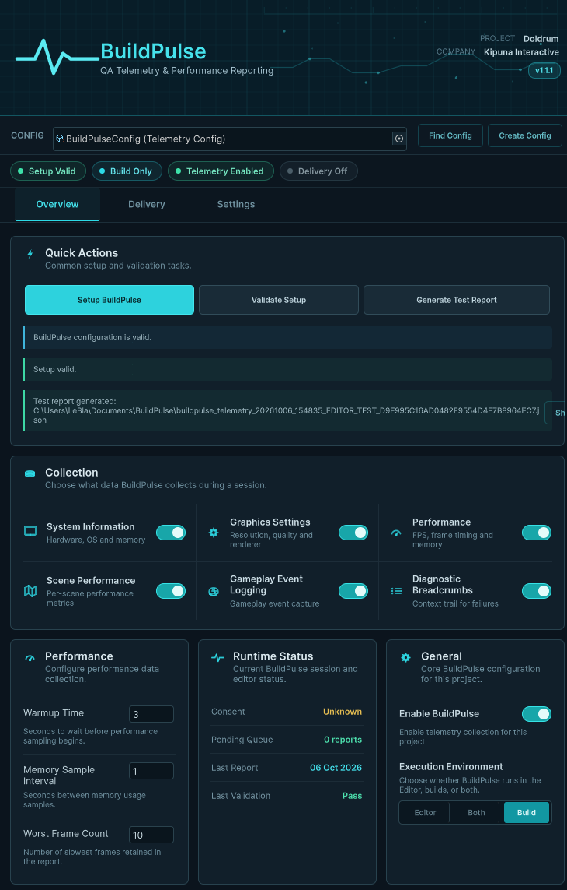

Making internal testing more useful
BuildPulse is a Unity QA telemetry and performance reporting tool designed to make internal testing easier to analyze and act on.
Instead of depending on testers to manually document technical information, BuildPulse gathers useful runtime context during the test session.
The resulting data can then be packaged into a consistent report and delivered into the team's development workflow.
